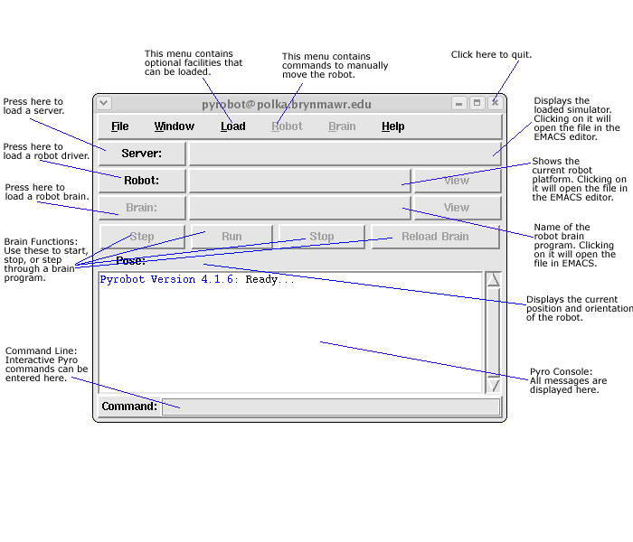
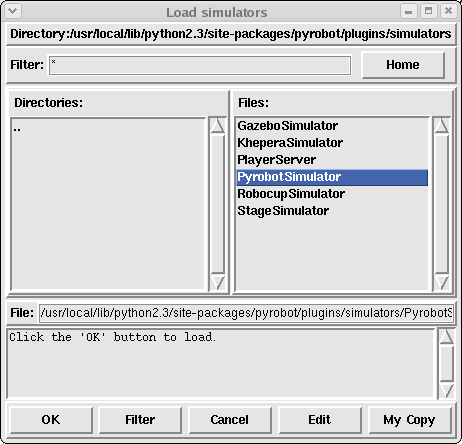
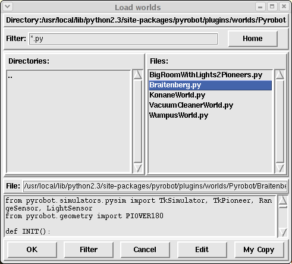
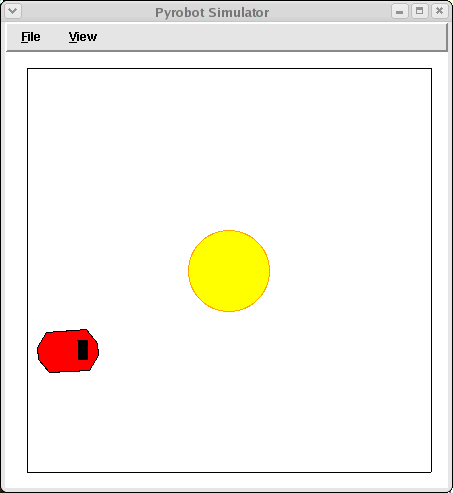
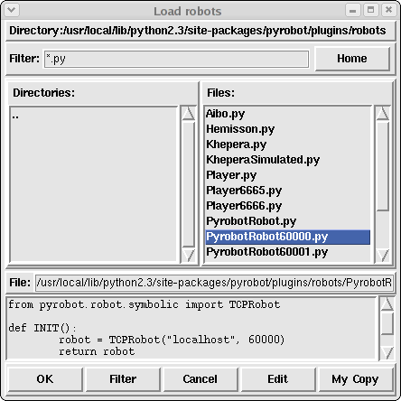
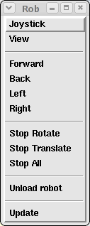
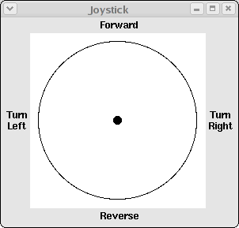

|
|||||||
| [ Home ] | [ Software ] | [ Curriculum ] | [ Hardware ] | [ Community ] | [ News ] | [ Publications ] | [ Search ] |
|
The Pyro InterfaceAs mentioned in the introduction, Pyro can be used to experiment with simulated as well as real robots. Currently, the following simulator and robot platforms are supported: Simulators
Robots
In this section, we will outline how to run Pyro specifically to use all of the above platforms. Regardless of the platform one uses one typically follows the steps outlined below:
If the simulator is not chosen, Pyro assumes that you will be using a real robot. Interacting with the robot (real or simulated) includes the ability to give specific commands to the robot in an interactive mode, or controlling the robot using a robot brain program.
Starting PyroIf your installation is set up properly, all you have to do is enter the command in a terminal window:$ pyrobot If all goes well, you will see the following window on your desktop:  Once in Pyro, you can specify a simulator, by pressing the Server: button, followed by the kind of robot you will be using. If you do not specify a simulator, Pyro assumes that you will be using a real robot. Notice that even when you choose to use a simulator, you still have to specify a robot. This is because, in some simulators (like Stage), you can simulate different robot platforms. Notice also that several menu and button options are disabled in the Pyro window. These become enabled as you specify more and more details about your session. For example, you can load a robot brain (using the Brain button) once you have specified a robot. The buttons: Step, Run, Stop, etc. are brain specific operations and will be explained when we talk about brains. For the time being, review the Pyro window above to get familiarized with the interface.
Specifying a SimulatorTo load a simulator, just press the Server: button in the Pyro window.You will get a pop-up file dialog as shown below:  As you can see, there are currently five simulators, and a server available:
Loading the Pyrobot SimulatorSelect the Pyrobot Simulator, and press the OK button. After you have selected the simulator, you will be asked to specify a simulated world for the simulator. The simulators allow you to specify any world in which you would like to run your simulated robot. A simulated world is specified in a world file which varies from simulator to simulator. It is recommended that when doing robot experiments you should first test all your programs in a simulated environment, before running on the real robot. This helps you debug your programs and is less time consuming. You can replicate your robot's environment in a simulated world by writing your own world file. Later, we will show you how to create your own world files. When you specify a simulator, another window will pop up asking you to specify a world file. This is shown below:  Some world files are already provided. For now, you can choose Braitenberg.py world and press the OK button. The simulator will start, load the specified world file and you will get the following display:  The red object you see on the screen is a visual representation of the simulated robot. You can move the robot within the environment by clicking the left mouse button on the robot and dragging it to the desired location. You can zoom the view in or out using the right moust button. If you look at the terminal window in which you launched Pyro, you'll see a message like the following:
Simulator starting listener on port 60000 ... This indicates that the simulator is ready to accept a connection to the robot.
Specify a robot platform to PyroTo be able to control the robot through Pyro, you have to request Pyro to do so. This is also similar to asking Pyro to connect to a physical robot. Whether using a simulated or a real robot, the procedure is the same.Here is what you have to do to establish a connection with the robot to be controlled. If you are continuing from the previous section, you already have the Pyrobot simulator running. If not, start Pyro and load the Pyrobot simulator (with the world file: Braitenberg.py). First, select the Pyro window to make it active. Press the Robot button in the Pyro window. You will get the following dialog window:  Of the choices shown, select PyrobotRobot60000.py because this was the port that the simulator was expecting a connection from. Pyro will then attempt to connect with the robot in the Pyrobot world. You will see some diagnostic messages printed in the Pyro console, and you will see the robot in an activated state in the simulator window. This is shown below:
Count the number of rays emanating form the robot. You should be able to identify 8 of them. Each corresponds to a sonar on the robot. The length of the ray depicts the current range readings of the sonars. Now that you have made a successful connection with the robot, you are ready to interact with it. In the Pyro window, pull down the Robot menu and then click on the first item (the dashed lines). The menu will reconstitute itself into a separate window that you can move somewhere near the Stage window. It has several commands for driving/communicating/controlling the robot:
 Go ahead and select the Joystick option to get a mouse-based joystick control window. You can click and drag in this window to drive the robot around. Try it. It takes a little getting used to.
 You can also use the other commands on the menu to move the robot. Go ahead and drive the robot around using the commands for moving. Try all the commands and get a good feel for the robot's movements especially when you mix left/right rotation with the translation commands for going forward/back. You can stop the rotation or the translation or completely stop the robot from moving.
The Command Line InterfaceNext, we will try interacting with the robot through the Command Line area at the bottom of the Pyro window. In the text area you can enter any Python or robot command. Depending on the command you type, you will either see the robot respond by moving in its world, or if the command was a query for some kind of information, you will see the results printed in the Python Console.First, let's query the robot for some information. The Python variable robot is the handle that enables us to issue commands to the robot. The simplest command you can enter is robot This is equivalent to evaluating the value of the variable robot in Python. When you enter the above command, the response will be printed in the terminal window:
>>> robot <pyrobot.robot.symbolic.TCPRobot instance at 0xb7f0a04c> You can also ask the robot to start moving forward by giving it the translate command.
robot.translate(0.1) You will see the robot moving forward in the simulator window. Now, issue a command for the robot to stop:
robot.stop() You should see that the sonar values now correspond to the robot's location in the simulated world. The translate() and stop() commands will be used in your brain programs. They work as follows:
translate(X): A method. Moves the robot forward or backward. The values of X range from -1.0 to 1.0. Negative values imply a negative translation (i.e. going backward), and positive values imply forward translation. Notice that if you have issued a rotate() command also (see below), then the robot will move while turning at the same time.
robot.translate(-0.2)
stop(): Stops the robot's translation and rotation motors.
robot.stop() Similarly, you can ask the robot to rotate. Here are the details of the rotate command:
rotate(X): Rotates the robot in its current position at the speed X. As in translate, above, the values range from -1.0 to 1.0 with negative values implying clockwise rotation and positive implying counterclockwise rotation.
robot.rotate(-0.5) You can combine the translation and rotation (i.e. moving forward/backward while rotating) using the move command which is defined as follows:
move(T, R): Combines the specification of translation and rotation into one command. The robot will translate at speed T (in the range [-1.0..1.0]) while at the same time rotating at speed R (in range [-1.0..1.0]).
robot.move(0.3, -0.1) Notice that negative values rotate to the right. This may seem unintuitive, but think of angles drawn in the first quadrant on a graph. Angles such as 45 degrees are shown increasing counter-clockwise. You can also control the power to each wheel of a robot with the motors() command:
robot.motors(1, 0) Here we have sent 1 (full power) to the right wheel, and no power to the left. To get the robot to "turn on a dime" we can:
robot.motors(1, -1) Try this and all other commands to get comfortable with the various robot motions. The command text area has some convenient command history and command line editing functionality which is summarized in the table below:
-------------------------------------------------- GUI Command line editing: -------------------------------------------------- Control+p or UpArrow previous line Control+n or DownArrow next line Control+a or Home beginning of line Control+e or End end of line Control+f or RightArrow forward one character Control+b or LeftArrow back one character Control+RightArrow forward one word Control+LeftArrow back one word TAB command line completion
Cleaning upNote that when you are done, you should quit from Pyro. You can press control+c in the Terminal window, or select the File menu and then choose Exit. If you quit the simulator before quitting from Pyro, Pyro may not close down properly. This is because the Pyro connection to the robot still remains active.
ExerciseExecute pyrobot in a the terminal window. For the server, select StageSimulator, and then simple.cfg. Use the Player6665.py robot file and try out the following:
The way Pyro is designed, it doesn't matter whether you are using a real robot, or a simulated robot, or even a different simulator, the way you interact with the robot remains the same. Next, we will learn about robot attributes. Next: Robot Attributes Up: PyroModuleIntroduction
|
| [ Home ] | [ Software ] | [ Curriculum ] | [ Hardware ] | [ Community ] | [ News ] | [ Publications ] | [ Search ] |
 View Wiki Source | Edit Wiki Source | Mail Webmaster
View Wiki Source | Edit Wiki Source | Mail Webmaster | |||||||